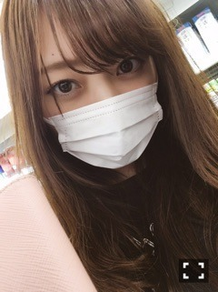
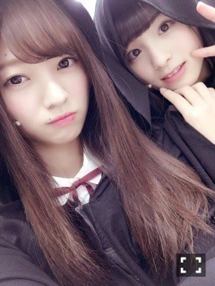
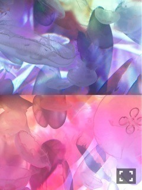

夜の冷たさ。梅澤美波
みなさまこんにちは！
乃木坂46３期生の
梅澤美波です。


マスク女
パシャ
ぼさぼさ
ふゆのよるがすきです
最近は暖かくてあまりタイプではない夜
今日とか冷たくて寒くて最高です
移動中、車乗りながら音楽聞きながら
外を見るのが好き
夜に限ります
今日は長いですお付き合い下さい( .. )
プリンシパル、
終盤の11日、12日、４公演
出演できなくて本当にごめんなさい。
自己管理の悪さに
とても、とても反省しました。
本当にごめんなさい。
このお仕事をさせていただいて、
自分の体は自分だけのものじゃないって
改めて思いました
自分のせいで
何人もの人にご迷惑おかけしてしまっているか、深く反省しました
３幕の幕が開くと
青と水色のサイリウムがたくさん見えて
うちわやボード、たくさん見えて
２幕に立てなかった日でも
この人たちが見てくれているなら
自分らしく、全力でやれば
きっと何か伝わるはず
今は苦しいけど、
この人たちのために頑張ろうって
そんな風に思わせてくれる皆さんに
悲しい思いをさせてしまう自分に
腹が立ちました。
私がいない公演でも
青と水色のサイリウム振ってくれてる人たくさんいたよ
うちわとボードたくさんあったよ
って。
本当にありがとう
全部届いてます！！
本当に１番の支えなんです。
皆さんがいれば、
なにも辛くなかった◎！！
この分は
絶対に別の場所でお返しします。
土曜日の朝にはもう熱はなくて
体も元気だったから
出られないことが余計辛くて悔しかった


ももっぴ
プリンシパル中は
楽屋の席が隣なのでずっと一緒でした
プリンシパル、
たくさん悩んで苦しんで
人生で１番泣いたんじゃないかってくらい
涙も流しました、
自分と向き合う機会って
そうなかなか無い事だから、
自分にとってはとても成長させてくれる期間でした。
ジョバンニ役をやらせていただいたその日
３幕の終わりにご挨拶をさせていただいた時、
３役制覇を目標にします！
と、言わせていただきました。
本当は怖かったです
言うのも戸惑いました
けど、私は絶対達成したい！って
そう思って心から出た言葉でした。
結果的には叶えられなかったけど、
今までの私なら口に出すことさえ
できなかったと思うから
少し成長できた気がします
人よりできないことが多い分、
その分やらなければいけないことも
たくさんありました
でも、してきた努力とかって
人に話すものではないと思うから
私は行動で見てほしかったです
伝わってないかもしれないけど( .. )
公演が始まる前、舞台袖にいる時
毎公演絶対、久保ちゃんとぎゅーして
頑張ろう、絶対大丈夫だ、できるよ
って、2人で言い合ってました。
３つも下なのにすごく逞しいんです。
ももっぴが毎日のようにお泊まりきて
２人で頑張ろうって
語り合ったりとか
１幕終わって出られなくて
我慢してるけどやっぱり苦しくて
あやに泣きついたり
受け止めてくれます
私なんかで支えになるならって
近くにいてあげたり
逆に誰かがそばにいてくれたり。
裏でずっと支えてくれて
この舞台を作り上げてくれた
スタッフさん方、本当に皆様いい人達なんです。
家族みたいでした。
監督の徳尾さんにも
演技のことで悩んでいる私に
私の演技はどこがいいのか、
どこを治したらいいのか、
ちゃんと向き合って教えていただきました
一緒に物語を作ってくださった
大高さん、柿丸さん、酒井さん。
私が1幕に立てなくて
ずっと落ち込んでたら声をかけてくれて
１幕に立てた日には
一緒に喜んでくれた
梅ちゃん！ぐー！だよ！
胸はって堂々と！
俺今日の２幕めちゃくちゃ楽しかったよ
って。
幸せでした( .. )

くろ
大勢の方の力、
支えがあり、
プリンシパルを終えることが出来ました。
始まる前は本当に不安で
挫けそうになったこともあったけど
こんなに素敵な舞台を用意してくださった
関係者の方々には
本当に感謝の気持ちでいっぱいです。
５ヶ月前まで顔も名前も知らない
女の子たちがこう集まって
一つの舞台を作るって
すごいことだなって思ったんだ～
プリンシパル、
やってよかった～！！！
一生忘れられない思い出になりました( ¨̮ )
たくさんのご声援、
本当にありがとうございました。
前にお仕事の合間に
あやと水族館行きました～
大好きな蜷川さんとクラゲのコラボ


めちゃくちゃ素敵でした
幻想的な世界だった
癒された～
コメント全部読んでます。
すごいパワーになってます
いつもありがとう
質問返しすると長すぎちゃうから
次まで待ってね
握手会応募も始まりました！
個別握手会。
来てくれる方、いるのかなって
すごく不安だけど、
私握手会大好きだから楽しみです( ¨̮ )
楽しみにしててね～
服装も色々考えます！！
してほしい髪型だったり
服装だったりあれば
コメントしてください～
パジャマをどこかで着ようかな～
って考えてます～どうかなっ
めちゃくちゃたのしみ～
待ってるね～( ¨̮ )

マネージャーさんのキャップ
キャップなんてレアだよ
帽子ほしいから買います
次回、また書きます。
今日はこのへんで！！
それじゃ、またね
いつも本当にありがとう
もっともっと頑張るから
応援よろしくお願いします
だいすき( ¨̮ )
Original：https://www.nogizaka46.com/s/n46/diary/detail/36990?ima=0533&cd=MEMBER